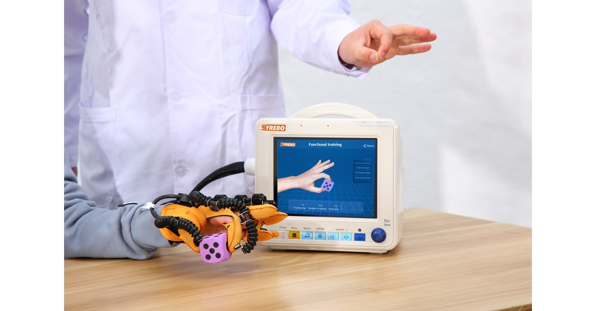

Syrebo-rubriek Klinisch Onderzoek
Onderzoek naar revalidatie met robothandschoenen, op basis van gepubliceerd bewijs
Uit de publicatie
The Impact of Three-Week Passive Robotic Hand Therapy on Stroke Patients
Xinhang Li, Minjun Zheng, Jinbiao Liu, Li Zhang, Lizi Jiang, Shiwei Zheng, Linqing Feng, Tao Tang, Lei Ling, Xiangming Ye, Yina Wei
Intelligent Robotics and Applications, ICIRA 2023, LNCS 14267
DOI: 10.1007/978-981-99-6483-3_21
Afbeeldingen uit de publicatie: hergebruik is niet bevestigd; op deze pagina zijn er geen overgenomen.

Deze conferentiepublicatie beschrijft training met een neurofysiologische registratie; een effect op de handfunctie is daarmee nog niet vastgesteld. Het abstract meldt beperkte verbetering van de handfunctie en afzonderlijk een verandering in de totale hersenactiviteit. Na de training van drie weken meldt het abstract een hogere EEG–EMG-coherentie in de bèta- en gammabanden. Hoe dit samenhangt met de actieve bewegingsmodus moet in de volledige publicatie worden opgehelderd. De functionele score en het signaal verdienen elk een eigen uitleg.
Een handfunctieschaal gaat over beweging en scores. EEG en EMG meten elektrische activiteit tijdens de registratie en kunnen laten zien of hersenen en spieren meer synchroon actief waren. Beide metingen kunnen uit dezelfde sessies komen, maar zijn niet onderling uitwisselbaar.
Een congresabstract is korter dan een tijdschriftartikel. Als het abstract niets vermeldt over het aantal deelnemers, een controlegroep of uitval, kunnen die gegevens niet uit een productblad worden aangevuld.
Op de afdeling draait de vraag om de hand vaak om grijpen, loslaten en eenvoudige dagelijkse taken. EEG en EMG gaan over de synchronisatie van hersenen en spieren tijdens de meting. Als een vroeg programma alleen een fysiologisch signaal rapporteert, weet de therapeut nog niet of ook de handscore is veranderd. Dit abstract plaatst een beperkte verandering in handfunctie naast een coherentiemeting; daarom beschrijven we die afzonderlijk.
Het onderzoek gebruikte EEG en EMG om drie weken passieve robothandtherapie en elektrische activiteit in sensorimotorische gebieden te onderzoeken. Het abstract van de uitgever noemt geen fabrikant of model van het apparaat.
Het abstract bespreekt drie bewegingsmodi bij de beschrijving van hersenactiviteit na de training. Het noemt geen deelnemersaantal of apparaatmodel en legt niet uit hoe deelnemers zijn ingedeeld. Daarvoor is de volledige publicatie nodig.
De uitkomsten liggen op twee niveaus. Functioneel beschrijft het abstract een beperkte verbetering van de handfunctie. Fysiologisch gaat het om de totale hersenactiviteit en de bèta- en gamma-EEG–EMG-coherentie na training; de relatie met de actieve bewegingsmodus moet in de volledige publicatie worden opgehelderd. Het abstract noemt geen deelnemersaantal waarmee dit als samenvatting van een gerandomiseerd onderzoek kan worden gepresenteerd.
Onderzoeksopzet
Het abstract beschrijft drie weken passieve robothandtherapie met EEG en EMG en bespreekt hersenactiviteit bij drie bewegingsmodi. De indeling is niet voldoende beschreven om afzonderlijke trainingsgroepen of een gerandomiseerd gecontroleerd onderzoek vast te stellen.
Deelnemers en planning
De beschreven training duurde drie weken. De volledige publicatie was niet beschikbaar; daarom vermelden we geen deelnemersaantal, groepsgrootten of uitval.
Belangrijkste bevindingen
Het abstract meldt beperkte verbetering van de handfunctie. Dat mag niet worden weergegeven als groot functioneel herstel. Het meldt ook een verandering in de totale hersenactiviteit, zonder significant verschil tussen de drie modi in de sensorimotorische gebieden. Na drie weken training meldt het abstract een hogere bèta- en gamma-EEG–EMG-coherentie; de relatie met de actieve bewegingsmodus moet in de volledige publicatie worden opgehelderd. De auteurs zien dit als een signaal van efficiëntere neurale aansturing van spieren. Het blijft een fysiologische maat, geen vervolgmeting van dagelijkse activiteiten.
Het abstract verbindt een trainingsmodus met hersenactiviteit en neuromusculaire koppeling. Dat laat zien waarom meerdere maten nuttig zijn en waarom de uitleg over het mogelijke mechanisme afzonderlijk moet blijven totdat de effectgroottes in de volledige tekst zijn nagegaan.
Voor de klinische lezer laat het abstract zien dat een trainingsmodus zowel een schaalscore als een fysiologisch signaal kan opleveren. Dat signaal vervangt geen meting van handfunctie of dagelijkse activiteiten. Zolang deelnemersaantal, controle en effectgroottes niet in de volledige tekst zijn gecontroleerd, blijft dit een aanwijzing over een mechanisme en geen conclusie voor een productblad.
Beperkingen De gecontroleerde bron bestaat uit het abstract van de uitgever en de bibliografische gegevens. Deelnemersaantal, controlegroep en exacte statistiek zijn niet geverifieerd en worden daarom niet ingevuld. Beperkte verandering van handfunctie is geen vastgesteld behandeleffect. Coherentie is geen dagelijkse activiteit. Ontbrekende aantallen en p-waarden worden niet aangevuld.